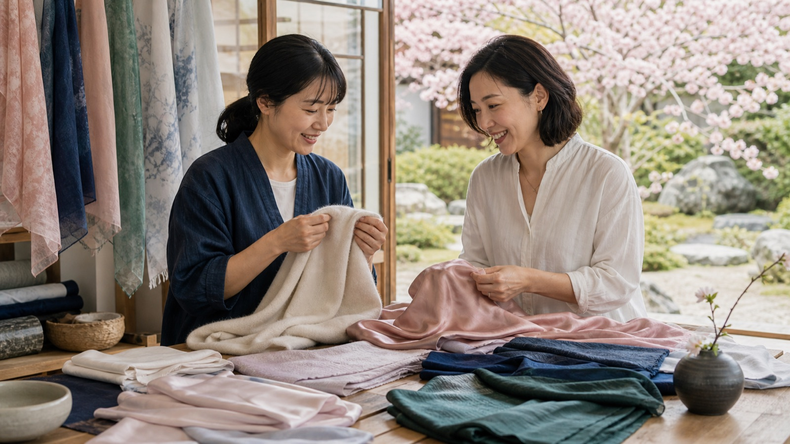
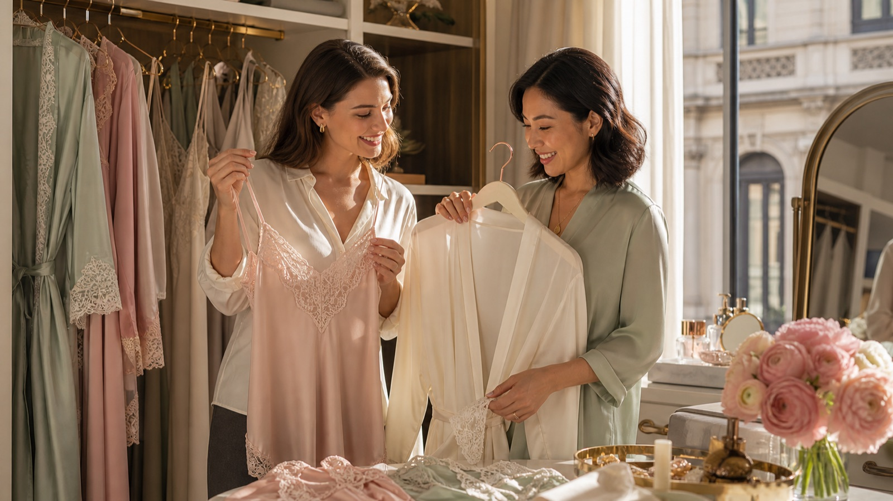

顏色先小面積試，不急著整套換季
從白色、寶石色、薄荷綠到番茄紅，先放在上衣、絲巾、包鞋或指甲，而不是一口氣買滿。
閱讀主題 →這個主題群把秀場語言拆成顏色、材質、比例、配件與個人風格，避免每篇都停在抽象趨勢詞。

從白色、寶石色、薄荷綠到番茄紅，先放在上衣、絲巾、包鞋或指甲，而不是一口氣買滿。
閱讀主題 →
用剪裁、材質、留白與保養狀態建立安靜的質感，不需要把品牌標誌當成主角。
閱讀主題 →
銀髮、線條、姿態與簡潔輪廓，都能成為成熟風格的一部分，不必假裝自己沒有年齡。
閱讀主題 →
真絲、亞麻、棉、薄針織與混紡都要回到透氣、皺摺、保養成本與旅行收納來判斷。
閱讀主題 →
絲巾、胸針、長項鍊、耳環與輕珠寶能讓舊衣重新成立，也比大面積追趨勢更穩。
閱讀主題 →先定義自己要被如何記住，再決定哪些流行元素值得採用，哪些只需要欣賞就好。
閱讀主題 →